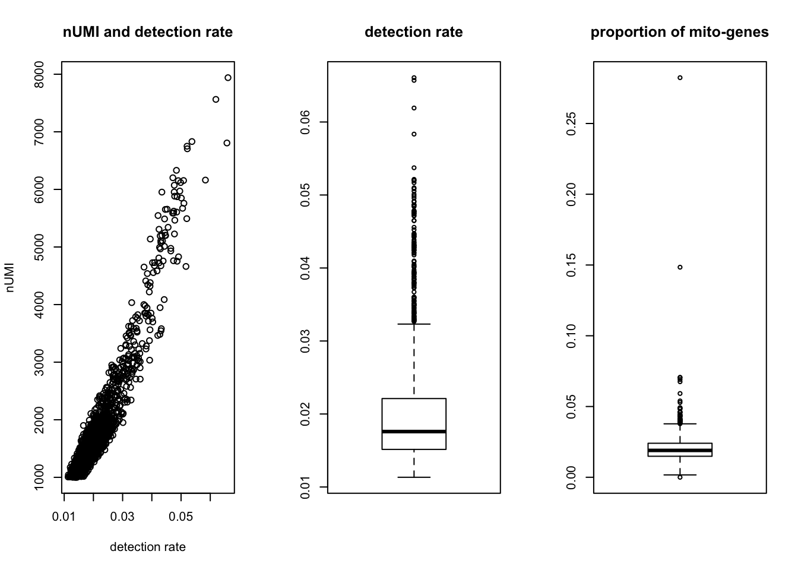
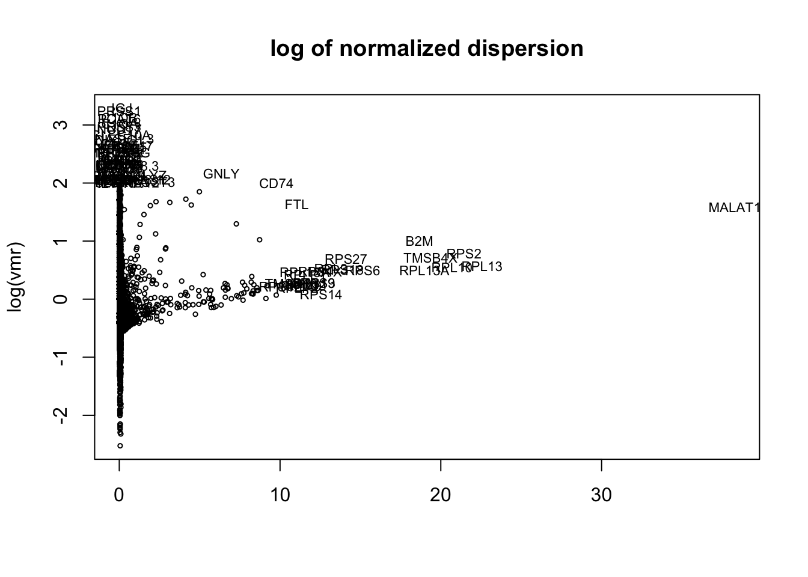
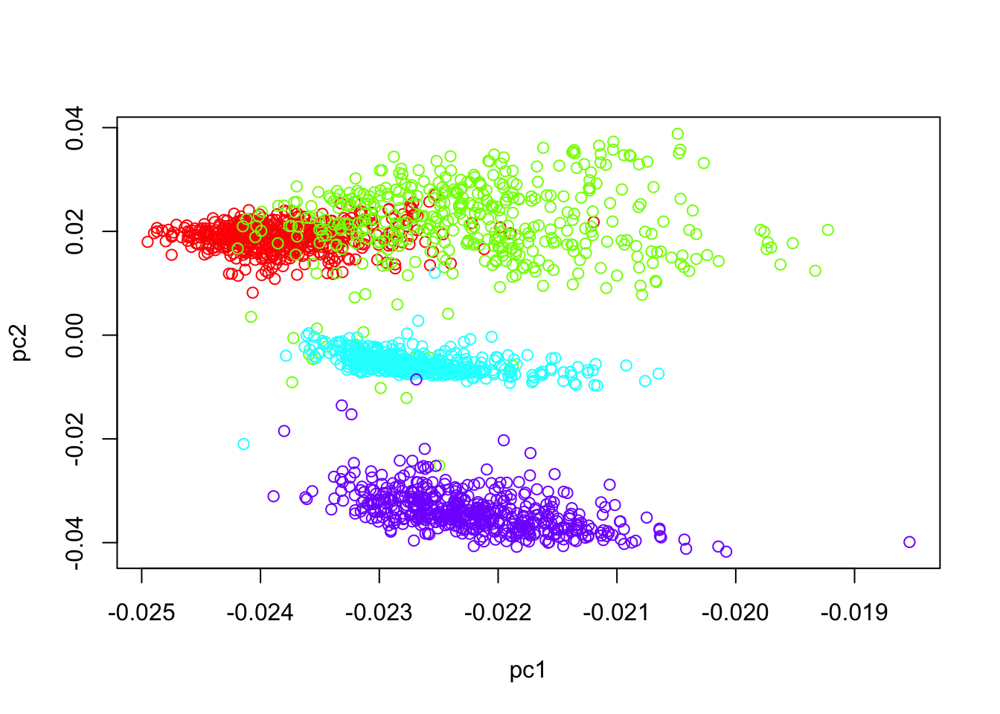
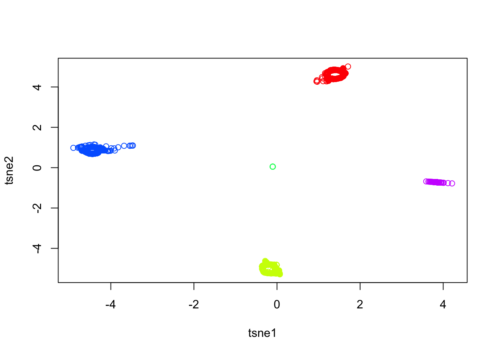
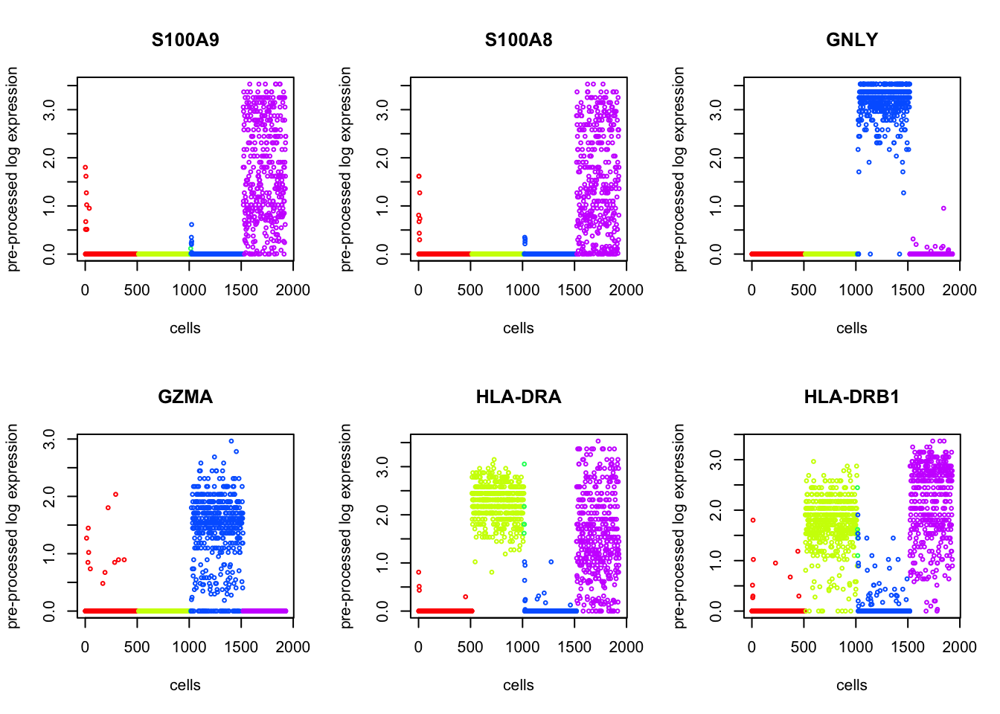
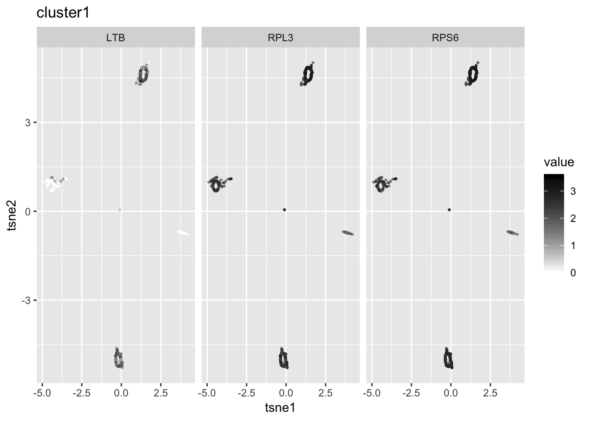
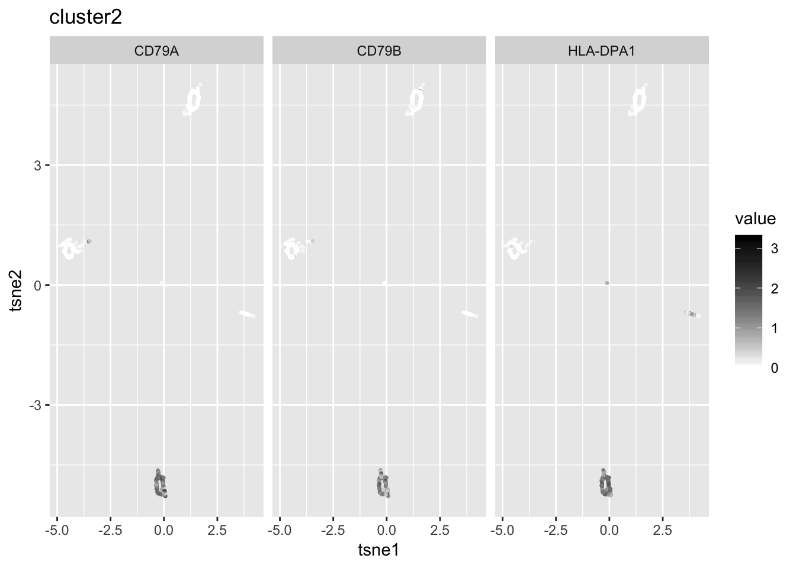
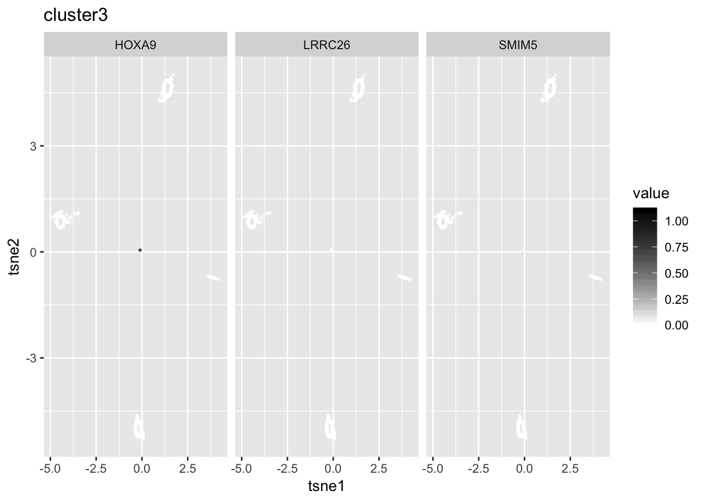

Example in 10X
Tae Kim
9/12/2018
Last updated: 2018-09-14
workflowr checks: (Click a bullet for more information)-
✖ R Markdown file: uncommitted changes
The R Markdown file has unstaged changes. To know which version of the R Markdown file created these results, you’ll want to first commit it to the Git repo. If you’re still working on the analysis, you can ignore this warning. When you’re finished, you can runwflow_publishto commit the R Markdown file and build the HTML. -
✔ Environment: empty
Great job! The global environment was empty. Objects defined in the global environment can affect the analysis in your R Markdown file in unknown ways. For reproduciblity it’s best to always run the code in an empty environment.
-
✔ Seed:
set.seed(20180618)The command
set.seed(20180618)was run prior to running the code in the R Markdown file. Setting a seed ensures that any results that rely on randomness, e.g. subsampling or permutations, are reproducible. -
✔ Session information: recorded
Great job! Recording the operating system, R version, and package versions is critical for reproducibility.
-
Great! You are using Git for version control. Tracking code development and connecting the code version to the results is critical for reproducibility. The version displayed above was the version of the Git repository at the time these results were generated.✔ Repository version: fad2984
Note that you need to be careful to ensure that all relevant files for the analysis have been committed to Git prior to generating the results (you can usewflow_publishorwflow_git_commit). workflowr only checks the R Markdown file, but you know if there are other scripts or data files that it depends on. Below is the status of the Git repository when the results were generated:
Note that any generated files, e.g. HTML, png, CSS, etc., are not included in this status report because it is ok for generated content to have uncommitted changes.Ignored files: Ignored: .Rhistory Ignored: .Rproj.user/ Ignored: R/.Rhistory Ignored: analysis/.Rhistory Ignored: analysis/pipeline/.Rhistory Untracked files: Untracked: ..gif Untracked: .DS_Store Untracked: R/.DS_Store Untracked: analysis/.DS_Store Untracked: analysis/make_labeled_data.R Untracked: analysis/normalization_test.R Untracked: analysis/pipeline/0_dropseq/ Untracked: analysis/pipeline/1_10X/ Untracked: analysis/pipeline/2_zeisel/ Untracked: analysis/pipeline/3_smallsets/ Untracked: analysis/slsl_10x.Rdata Untracked: analysis/slsl_dropseq.Rdata Untracked: analysis/writeup/bibliography.bib Untracked: analysis/writeup/draft1.aux Untracked: analysis/writeup/draft1.bbl Untracked: analysis/writeup/draft1.blg Untracked: analysis/writeup/draft1.log Untracked: analysis/writeup/draft1.out Untracked: analysis/writeup/draft1.pdf Untracked: analysis/writeup/draft1.synctex.gz Untracked: analysis/writeup/draft1.tex Untracked: analysis/writeup/jabbrv-ltwa-all.ldf Untracked: analysis/writeup/jabbrv-ltwa-en.ldf Untracked: analysis/writeup/jabbrv.sty Untracked: analysis/writeup/naturemag-doi.bst Untracked: analysis/writeup/wlscirep.cls Untracked: data/unnecessary_in_building/ Untracked: docs/figure/example_10x.Rmd/.DS_Store Untracked: dropseq_heatmap.pdf Unstaged changes: Modified: NAMESPACE Modified: R/explore_data.R Modified: analysis/10x_labeled.Rmd Modified: analysis/pipeline/.DS_Store Modified: analysis/writeup/.DS_Store Modified: data/.DS_Store Modified: docs/figure/.DS_Store
Expand here to see past versions:
SLSL result
## read labeled data
X = readMM("~/Downloads/10x/combined/hg19/matrix.mtx")
genenames = read.table("~/Downloads/10x/combined/hg19/genes.tsv",
stringsAsFactors = F)$V2
barcodes = read.table("~/Downloads/10x/combined/hg19/barcodes.tsv",
stringsAsFactors = F)$V1
truelabel = read.table("~/Downloads/10x/combined/hg19/truelabel.txt")$V1
## reduce size
ind = sample(1:ncol(X), 2000)
X = X[,ind]; barcodes = barcodes[ind]; truelabel = truelabel[ind]
table(truelabel)truelabel
1 2 3 4
249 96 1408 247 writeMM(X, "~/Downloads/10x/combined/smallerhg19/matrix.mtx")NULLwrite.table(barcodes, "~/Downloads/10x/combined/smallerhg19/barcodes.tsv", col.names=F,row.names=F,quote=F)
write.table(truelabel, "~/Downloads/10x/combined/smallerhg19/truelabel.txt", col.names=F,row.names=F,quote=F)
summary = explore_data(X, genenames)
Expand here to see past versions of unnamed-chunk-1-1.png:
| Version | Author | Date |
|---|---|---|
| a603da1 | tk382 | 2018-09-14 |
ind = cell_filter(summary, c(1000,5000),
c(0.01, 0.04),
c(0, 0.1))
X = X[,ind]
truelabel = truelabel[ind]
library(dplyr)
par(mfrow=c(1,1))
ind = which(Matrix::rowSums(X)==0)
X = X[-ind, ]; genenames = genenames[-ind]
disp = plot_dispersion(X = X,
genenames = genenames,
bins=20,
median=FALSE,
outliers.mean.thresh = c(10,Inf),
outliers.vmr.thresh=c(2, Inf))
Expand here to see past versions of unnamed-chunk-1-2.png:
| Version | Author | Date |
|---|---|---|
| a603da1 | tk382 | 2018-09-14 |
X = gene_filter(X, genenames, disp, c(0,25), c(0.5, Inf))
genenames = X$genenames
X = X$X
X = quantile_normalize(X)
out = SLSL(X, plot=TRUE, verbose=TRUE, numClust=4)[1] "constructing kernel.."
[1] "optimizing.."
[1] "network diffusion.."
[1] "dimension reduction.."
Expand here to see past versions of unnamed-chunk-1-3.png:
| Version | Author | Date |
|---|---|---|
| a603da1 | tk382 | 2018-09-14 |
plot(out$tsne$Y[,1], out$tsne$Y[,2], col=truelabel,
ylab="tsne2", xlab="tsne1", main="true labels")
Expand here to see past versions of unnamed-chunk-1-4.png:
| Version | Author | Date |
|---|---|---|
| a603da1 | tk382 | 2018-09-14 |
adj.rand.index(truelabel, out$result)[1] 0.9804337table(truelabel, out$result)
truelabel 1 2 3 4
1 0 0 0 249
2 92 1 3 0
3 2 3 1403 0
4 0 233 4 0# par(mfrow=c(1,1))
# plot(irlba(X, 20)$v[,1:2], col=rainbow(length(unique(truelabel)))[truelabel],
# xlab = "pc1", ylab = "pc2")
# tsne = Rtsne(irlba(X,10)$v[,1:10], pca=F, perplexity=50)
# plot(tsne$Y, col=truelabel)
# degenes = de_genes(X, genenames, out$result, top.n=100, plot=3)
# head(degenes)
bio.markers = find_markers(X, genenames, out$result, out$tsne$Y, top.n = 50, plot.n=3)
bio.markers$plots[[1]]
Expand here to see past versions of unnamed-chunk-1-5.png:
| Version | Author | Date |
|---|---|---|
| a603da1 | tk382 | 2018-09-14 |
bio.markers$plots[[2]]
Expand here to see past versions of unnamed-chunk-1-6.png:
| Version | Author | Date |
|---|---|---|
| a603da1 | tk382 | 2018-09-14 |
bio.markers$plots[[3]]
Expand here to see past versions of unnamed-chunk-1-7.png:
| Version | Author | Date |
|---|---|---|
| a603da1 | tk382 | 2018-09-14 |
bio.markers$plots[[4]]
Expand here to see past versions of unnamed-chunk-1-8.png:
| Version | Author | Date |
|---|---|---|
| a603da1 | tk382 | 2018-09-14 |
# par(mfrow = c(1,2))
# plot(tsne$Y, col=rainbow(length(unique(out$result)))[out$result],
# xlab="tsne1", ylab="tsne2",
# main="SLSL result")
# plot(tsne$Y, col=rainbow(length(unique(truelabel)))[truelabel],
# xlab = "tsne1", ylab = "tsne2",
# main="true label")Seurat Result
library(Seurat)Loading required package: ggplot2Loading required package: cowplot
Attaching package: 'cowplot'The following object is masked from 'package:ggplot2':
ggsavelibrary(dplyr)
pbmc.data = Read10X("~/Downloads/10x/combined/smallerhg19")
truelabel = read.table("~/Downloads/10x/combined/smallerhg19/truelabel.txt", header=F, stringsAsFactors = F)$V1
pbmc = CreateSeuratObject(raw.data = pbmc.data, min.cells = 3, min.genes = 200, project = "10X_PBMC")
mito.genes = grep(pattern = "^MT-", x = rownames(x = pbmc@data), value = TRUE)
percent.mito = Matrix::colSums(pbmc@raw.data[mito.genes, ])/Matrix::colSums(pbmc@raw.data)
pbmc = AddMetaData(object = pbmc, metadata = percent.mito, col.name = "percent.mito")
VlnPlot(object = pbmc, features.plot = c("nGene", "nUMI", "percent.mito"), nCol = 3)
par(mfrow=c(1,2))
GenePlot(object = pbmc, gene1 = "nUMI", gene2 = "percent.mito")
GenePlot(object = pbmc, gene1 = "nUMI", gene2 = "nGene")
pbmc <- FilterCells(object = pbmc, subset.names = c("nGene", "percent.mito"),
low.thresholds = c(200, -Inf), high.thresholds = c(2500, 0.05))
ind = which(!colnames(pbmc@raw.data) %in% colnames(pbmc@data))
if(length(ind)>0){truelabel = truelabel[-ind]}
pbmc <- NormalizeData(object = pbmc, normalization.method = "LogNormalize",
scale.factor = 10000)
pbmc <- FindVariableGenes(object = pbmc, mean.function = ExpMean, dispersion.function = LogVMR, x.low.cutoff = 0.0125, x.high.cutoff = 3, y.cutoff = 0.5)
length(x = pbmc@var.genes)[1] 2290pbmc = ScaleData(object = pbmc, vars.to.regress = c("nUMI", "percent.mito"))Regressing out: nUMI, percent.mito
Time Elapsed: 7.07855296134949 secsScaling data matrixpbmc = RunPCA(object = pbmc, pc.genes = pbmc@var.genes, do.print = FALSE, pcs.print = 1:5, genes.print = 5)
pbmc = FindClusters(object = pbmc, reduction.type = "pca", dims.use = 1:10,
resolution = 0.6, print.output = 0, save.SNN = TRUE)
pbmc = RunTSNE(object = pbmc, dims.use = 1:10, do.fast = TRUE)
TSNEPlot(object = pbmc)
table(pbmc@ident, truelabel) truelabel
1 2 3 4
0 0 4 986 1
1 0 0 421 3
2 249 0 0 0
3 0 0 1 243
4 0 92 0 0adj.rand.index(as.numeric(pbmc@ident), truelabel)[1] 0.5838871
Session information
sessionInfo()R version 3.5.1 (2018-07-02)
Platform: x86_64-apple-darwin15.6.0 (64-bit)
Running under: macOS Sierra 10.12.5
Matrix products: default
BLAS: /Library/Frameworks/R.framework/Versions/3.5/Resources/lib/libRblas.0.dylib
LAPACK: /Library/Frameworks/R.framework/Versions/3.5/Resources/lib/libRlapack.dylib
locale:
[1] en_US.UTF-8/en_US.UTF-8/en_US.UTF-8/C/en_US.UTF-8/en_US.UTF-8
attached base packages:
[1] stats graphics grDevices utils datasets methods base
other attached packages:
[1] Seurat_2.3.4 cowplot_0.9.3
[3] ggplot2_3.0.0 bindrcpp_0.2.2
[5] Rtsne_0.13 dplyr_0.7.6
[7] fossil_0.3.7 shapefiles_0.7
[9] foreign_0.8-71 maps_3.3.0
[11] sp_1.3-1 SCNoisyClustering_0.1.0
[13] irlba_2.3.2 Matrix_1.2-14
loaded via a namespace (and not attached):
[1] snow_0.4-2 backports_1.1.2
[3] Hmisc_4.1-1 workflowr_1.1.1
[5] igraph_1.2.2 plyr_1.8.4
[7] lazyeval_0.2.1 splines_3.5.1
[9] inline_0.3.15 digest_0.6.15
[11] foreach_1.4.4 htmltools_0.3.6
[13] lars_1.2 gdata_2.18.0
[15] magrittr_1.5 checkmate_1.8.5
[17] cluster_2.0.7-1 mixtools_1.1.0
[19] ROCR_1.0-7 sfsmisc_1.1-2
[21] recipes_0.1.3 gower_0.1.2
[23] dimRed_0.1.0 matrixStats_0.54.0
[25] R.utils_2.6.0 colorspace_1.3-2
[27] jsonlite_1.5 crayon_1.3.4
[29] RcppArmadillo_0.8.600.0.0 bindr_0.1.1
[31] zoo_1.8-3 survival_2.42-6
[33] iterators_1.0.10 ape_5.1
[35] glue_1.3.0 DRR_0.0.3
[37] gtable_0.2.0 ipred_0.9-6
[39] kernlab_0.9-26 ddalpha_1.3.4
[41] prabclus_2.2-6 DEoptimR_1.0-8
[43] abind_1.4-5 scales_0.5.0
[45] mvtnorm_1.0-8 bibtex_0.4.2
[47] Rcpp_0.12.18 metap_1.0
[49] dtw_1.20-1 htmlTable_1.12
[51] magic_1.5-8 reticulate_1.10
[53] bit_1.1-14 proxy_0.4-22
[55] mclust_5.4.1 SDMTools_1.1-221
[57] Formula_1.2-3 tsne_0.1-3
[59] stats4_3.5.1 lava_1.6.2
[61] prodlim_2018.04.18 httr_1.3.1
[63] htmlwidgets_1.2 gplots_3.0.1
[65] RColorBrewer_1.1-2 fpc_2.1-11.1
[67] acepack_1.4.1 modeltools_0.2-22
[69] ica_1.0-2 pkgconfig_2.0.1
[71] reshape_0.8.7 R.methodsS3_1.7.1
[73] flexmix_2.3-14 nnet_7.3-12
[75] caret_6.0-80 tidyselect_0.2.4
[77] labeling_0.3 rlang_0.2.1
[79] reshape2_1.4.3 munsell_0.5.0
[81] tools_3.5.1 pls_2.6-0
[83] broom_0.5.0 ggridges_0.5.0
[85] evaluate_0.11 geometry_0.3-6
[87] stringr_1.3.1 yaml_2.2.0
[89] bit64_0.9-7 ModelMetrics_1.1.0
[91] knitr_1.20 fitdistrplus_1.0-9
[93] robustbase_0.93-2 caTools_1.17.1.1
[95] purrr_0.2.5 RANN_2.6
[97] pbapply_1.3-4 nlme_3.1-137
[99] whisker_0.3-2 R.oo_1.22.0
[101] RcppRoll_0.3.0 pracma_2.1.4
[103] hdf5r_1.0.0 compiler_3.5.1
[105] rstudioapi_0.7 png_0.1-7
[107] tibble_1.4.2 stringi_1.2.4
[109] lattice_0.20-35 trimcluster_0.1-2.1
[111] pillar_1.3.0 lmtest_0.9-36
[113] Rdpack_0.9-0 data.table_1.11.4
[115] bitops_1.0-6 gbRd_0.4-11
[117] R6_2.2.2 latticeExtra_0.6-28
[119] KernSmooth_2.23-15 gridExtra_2.3
[121] codetools_0.2-15 MASS_7.3-50
[123] gtools_3.8.1 assertthat_0.2.0
[125] CVST_0.2-2 rprojroot_1.3-2
[127] withr_2.1.2 diptest_0.75-7
[129] parallel_3.5.1 doSNOW_1.0.16
[131] grid_3.5.1 rpart_4.1-13
[133] timeDate_3043.102 tidyr_0.8.1
[135] class_7.3-14 rmarkdown_1.10
[137] segmented_0.5-3.0 git2r_0.23.0
[139] lubridate_1.7.4 base64enc_0.1-3 This reproducible R Markdown analysis was created with workflowr 1.1.1